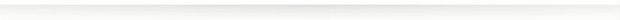

Februári certifikát ajánlat az UniCredit Banknál
Tisztelt %%V_12%%!
Februári certifikát ajánlatunkról az alábbiakban talál részletes információt.
A HVB EUR Express Plus Certificate (a továbbiakban: „certifikát”) egy olyan befektetési forma, ahol a kifizetés egy mögöttes részvény árfolyamának alakulásától függ. Pozitív teljesítmény abban az esetben érhető el, ha a részvény árfolyama nem esik az előre meghatározott aktiváló szint alá a rögzített éves megfigyelési időpontokban, illetve a védelmi szint alá a futamidő végén kijelölt utolsó megfigyelési napon.
Miért lehet érdemes a certifikátokat választania? Mert
|
megfelelő árfolyam alakulás esetén az eltelt időtől függő teljesítmény kifizetésből részesedhet; |
|||
|
a certifikát visszaváltása és így a kifizetés nemcsak akkor történik, ha emelkedik az árfolyam, hanem abban az esetben is, ha az adott időpontban nem esik az aktiváló szint alá; |
|||
|
a befektetés védelmi szinttel rendelkezik, mely védi a befektetőt a végső megfigyelési napon rögzített, legfeljebb 25%-os árfolyamcsökkenés esetén. |
A mögöttes eszköz
|
Veolia Environnement SA (EUR)
|
|
|
*A jóváírás mértéke befektetési egységenként az előre meghatározott időpontokban, a piacok kedvező alakulása esetén, az eltelt idő hosszától függően.2
**Az egyes visszaváltási napokhoz a következő megfigyelési napok tartoznak: 2018.03.05. (1.), 2019.03.05. (2.), 2020.03.05. (3.), 2021.03.03. (végső).
Struktúra
A certifikátok futamideje 4 év. A futamidő során évente, előre rögzített megfigyelési időpontokban megvizsgálják, hogy a 2017. március 3-án rögzített referenciaárhoz képest hogyan változott a mögöttes eszköz árfolyama. Ha az árfolyam emelkedett, vagy nem esett az aktiváló szint alá, az adott certifikát visszaváltásra kerül, és visszaváltási összegként kifizeti a befektetett tőkét a teljesítménnyel kiegészítve. Ha az aktiváló szint alá került a részvény árfolyama, nem történik visszaváltás és a befektetés fennmarad legalább a következő éves vizsgálatig.
Ha a certifikát a korábbi években nem került visszaváltásra, akkor a negyedik év végén, a futamidő lejártakor a kibocsátó megvizsgálja, hogy a referenciaárhoz képest hogyan alakult az árfolyam. Ha emelkedett vagy 25%-nál nem esett többet, akkor a tőke és az elért teljesítmény jóváírására kerül sor.
Amennyiben 25%-nál többet esett az árfolyam, akkor a befektető megkapja az Veolia Environnement SA megfelelő számú részvényét, illetve a fennmaradó töredék darabszámot pénzben írják jóvá. Ezt követően már részvénytulajdonosként döntheti el az ügyfél, hogy a részvényeket értékesíti a tőzsdén, vagy kedvezőbb árfolyam alakulásra számítva megtartja azokat.
Kockázatok3
A certifikátba való befektetés magas kockázattal jár, kiemelendő (i) a tőkevesztés kockázata, azaz a certifikát csak bizonyos feltételek teljesülése esetén fizeti vissza a befektetett tőke összegét, ezért előfordulhat, hogy a befektető a befektetett összegnél kevesebbet kap vissza; (ii) a kockázat, hogy a certifikát teljesítménye a futamidő alatt nincs feltétlenül összhangban, illetve akár lényegesen el is térhet a mögöttes eszköz tárgyát képező részvény vagy index teljesítményétől és a certifikát az árfolyam változására erőteljesebben vagy gyengébben is reagálhat, valamint (iii) a kibocsátói (hitelezési) kockázat, azaz a certifikát kibocsátója az UniCredit Bank AG, így ő felelős a kifizetések teljesítéséért.
Felkeltettük az érdeklődését?
Személyi bankára, %%V_9%% készséggel áll a rendelkezésére a %%V_10%%, illetve %%V_11%% elérhetőségeken!
Jegyzési időszak 2017.02.06. – 2017.03.03. 14:00 (Budapest/München időzóna szerint). A Jegyzési időszak az Alaptájékoztatóban foglaltaknak megfelelően korábban is lezárásra kerülhet.
|  |
|
Töltse le és aktiválja az UniCredit Mobil alkalmazást Android vagy iOS okostelefonján vagy tabletjén, hogy bármikor hozzáférhessen a számlájához! |
|
|
Üdvözlettel: UniCredit Bank Hungary Zrt. |
|
|
|
|
A certifikát (ISIN: DE000HVB2A01) forgalmazója az UniCredit Bank Hungary Zrt. (tev. eng. sz.: I-1523/2003.)(„UniCredit Bank”), a Budapesti Értéktőzsde tagja. A jelen figyelemfelhívás a tőkepiacról szóló 2001. évi CXX. törvény értelmében kereskedelmi kommunikációnak, a befektetési vállalkozásokról és az árutőzsdei szolgáltatókról, valamint az általuk végezhető tevékenységek szabályairól szóló 2007. évi CXXXVIII. törvény alapján pedig reklámnak minősül. A jelen kereskedelmi kommunikáció nem ad teljes körű információt a certifikátról és a forgalmazás feltételeiről, nem minősül ajánlattételnek, sem befektetési ajánlásnak.
Befektetési döntése meghozatala előtt kérjük, hogy mérlegelje a befektetés tárgyát, kockázatát, díjait és a befektetésekből esetlegesen származó károkat. Ennek érdekében kérjük, hogy figyelmesen tanulmányozza át a certifikát hivatalos Alaptájékoztatóját (Base Prospectus) és a Végleges Feltételeit (Final Terms), amelyek angol nyelven hozzáférhetők, valamint az Összefoglalóját, amely pedig magyar nyelven a www.unicreditbank.hu/certifikat weblapon, továbbá írásban, nyomtatott formában az UniCredit Bank székhelyén (1054 Budapest, Szabadság tér 5-6.) érhető el, valamint az UniCredit Bank Hungary Zrt. mindenkor aktuális, a certifikátok forgalmazásának további feltételeit, kondícióit is tartalmazó Kondíciós listáját és Üzletszabályzatát, amelyek hozzáférhetők az UniCredit Bank székhelyén, valamint honlapján. Az UniCredit Bank a kondíciók változtatásának jogát fenntartja.
Az UniCredit Bank kizárja a felelősségét az ügyfél által – a jelen tájékoztató alapján – hozott üzleti döntésekért, azok hatásáért, eredményéért, hozamáért, a meghiúsult várakozásokért és az ügyfelet érő esetleges károkért, veszteségekért. Az árfolyamok, illetve a kamatok változása negatív hatással lehet a befektetés értékére, továbbá a múltbeli teljesítményből nem lehetséges a jövőbeni hozamra, változásra, illetve teljesítményre vonatkozó megbízható következtetéseket levonni.
A reklámcélú levelek küldését bármikor ingyenesen lemondhatja emailben a privatebanking@unicreditgroup.hu email címen, telefonon a 336-2180-as telefonszámon vagy személyi bankára közvetítésével.
1 Forrás: A Veolia Environnement SA weboldala Vissza a levélhez
2 Minden, jelen dokumentumban közölt információ az 1 000 euró névértéket veszi alapul. A hozam mértéke csökkenhet a befektetéssel kapcsolatos díjakkal (például: forgalmazási jutalék, értékpapír letéti díj és tranzakciós költségek). Vissza a levélhez
3 A certifikáttal kapcsolatos kockázatok itt található leírása nem tekinthető teljes körűnek. Vissza a levélhez